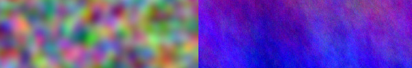

👹 ARTSTUFF.WTF

FRI 2/17
Michael Mandiberg: Workflow
LACMA
11am - 8pm (Through Jan 1, 2018) Free / $10 / $15 admission
The artist uses self-tracking technology to understand the changing definition of labor in the digital age. The endeavor has multiple components, including a one-year sonic installation, Quantified Self Portrait (Rhythms), in LACMA’s Pritzker Parking Garage elevators, and a three-channel video, Quantified Self Portrait (One Year Performance.) Quantified Self Portrait (Rhythms) sonifies a year of the artist’s heart rate data alongside the sound of email alerts. Mandiberg uses himself as a proxy to hold a mirror to a pathologically overworked and increasingly quantified society, revealing a personal political economy of data. The piece plays for one full year, from January 1, 2017 to January 1, 2018, with each moment representing the data of the exact date and time from the previous year. Quantified Self Portrait (One Year Performance) is a frenetic stop motion animation composed of webcam photos and screenshots that software captured from the artist’s computer and smartphone every 15 minutes for an entire year; this is a technique for surveilling remote computer labor. The images are paired with the short distillations of what Mandiberg learned each day during the durational performance.
INFO
We Never Needed Papers to Thrive: An Undocumented Art Showcase
Boyle Heights Art Conservatory
6pm - 9pm
We NEVER needed Papers to THRIVE: An Undocumented People Showcase. Come enjoy a night of fierce resilience. Centering the voices and narratives of UNDOCUMENTED people. Artists of all kinds, poets, painters, movie makers, drawers, singers, performers, drag queens, EVERYTHING we have done has been in the spirit of thriving. No Papers, No Fear!
INFO
Perpetual Dawn with Xosar Telefon Tel Aviv Force Placement (Black Lodge) Kid606 Dahlia Alex Pelly UNION 8pm - 2am $5 before 9 and advance sales, $10 before 10, $15 after We are throwing a night of megatechnohouseacid in Tribute to both David Cronenberg's groundbreaking ouevre and in Celebration of Force Placement’s new ep, which is the first release on our new Perpetual Dawn Label INFO

SAT 2/18
Suicide Live In Concert
Cinefamily
9:45pm
$14/free for members
Conventional wisdom tells us that punk began in ‘75 or ‘76. Not for Suicide, a punk band since 1970. Innovators Alan Vega and Martin Rev put forth the model for the synth duos that went on to dominate the ‘80s – but with their own unmatched style and legendary use of drum machines, organs, and synths. Travel back in time with us for this SUICIDE LIVE show, and revel in the unmatched glory of Bruce Springsteen’s favorite band. Followed by a Q&A with Pat Ivers and Emily Armstrong.
INFO

SUN 2/19
Sounds Of LA: Rahim AlHaj
Getty Museum
4pm (also on Saturday at 7pm)
FREE, reservation required (parking is $10 after 3)
Sounds of LA 2017 launches with a concert by Iraqi-American oud virtuoso Rahim AlHaj. His forthcoming album, Letters from Iraq, features eight original compositions inspired by a collection of recent letters by Iraqi women and children, which range from the banal to the brave. AlHaj says this stunning labor of love is written "with tears that lead to hope." Joining him for the project's California debut are David Felberg (violin I), Ruxandra Marquardt (violin II), Shanti Randall (viola), James Holland (cello), Jean-Luc Matton (bass-viol), and Issa Maluff (percussion). This concert is presented in collaboration with Smithsonian Folkways Recordings.
INFO

ABOUT
ARTSTUFF.WTF is a minimal website listing page for selected art (and etc) events going on around Los Angeles. It is a personal list of 4 - 6 events sent out to friends weekly, and made available online here for bookmarking and quick reference. There is an archive of past listings. Sign up to receive weekly emails.
